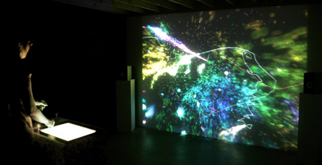

Artificial Nature
Artificial Nature is a research project and an evolving art installation by Haru Ji and Graham Wakefield.
You may remember experiences from your childhood, such as playing with your fingers in the flow of a river, or in the path of small marching insects, to alter their emerging patterns. Such play is a direct interaction with complex systems, provoking deep insights and aesthetically fascinating natural patterns; ludic investigations that may be considered an infinite game*.
We approach this subject through a trans-disciplinary research project drawing upon bio-inspired system theories and the aesthetics of computational world-making, incorporating the development of engaging immersive ecosystems as art installations. Our motivation is to develop a deeper understanding of emergence and creativity as a form of art, study and play, by taking inspiration from nature’s creativity while recognizing the potential of natural creation beyond the known and the physical.
As an exhibited installation, Artificial Nature has taken on two versions so far (click links for more information and videos):
| Artificial Nature as an Infinite Game | Artificial Nature: Fluid Space |

* Terminology borrowed from James Carse: Finite & Infinite Games. The infinite game is play whose aim is not closure, but continuation.